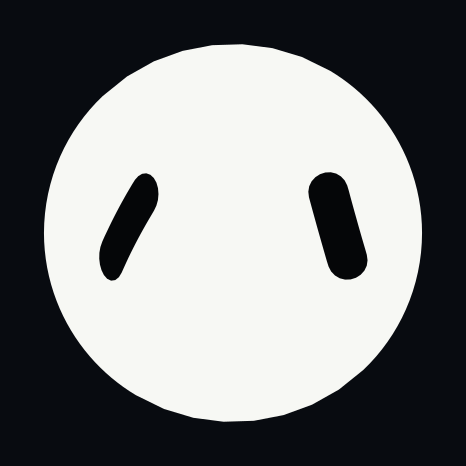
01 · idle
implemented eye group 0 · source eye group 8 · expression 0
Offline previews from the locked source geometry. White body, black eyes, 466 × 466 render space.

implemented eye group 0 · source eye group 8 · expression 0
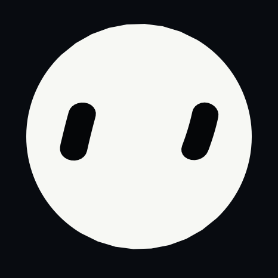
implemented eye group 1 · source eye group 10 · expression 1
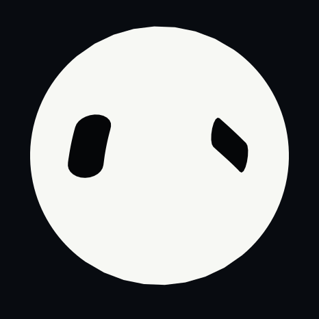
implemented eye group 2 · source eye group 14 · expression 2
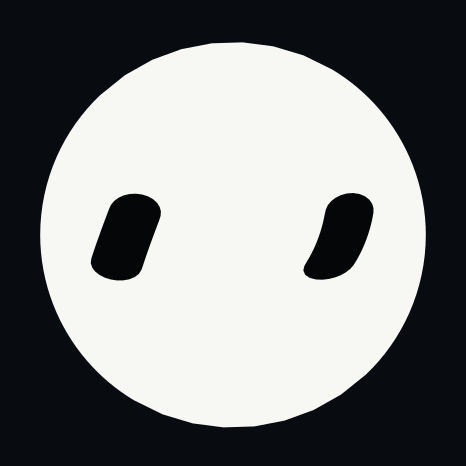
implemented eye group 3 · source eye group 2 · expression 3
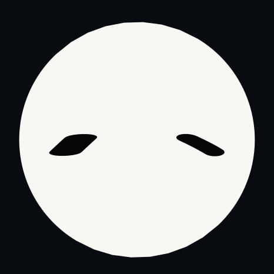
implemented eye group 4 · source eye group 17 · expression 4
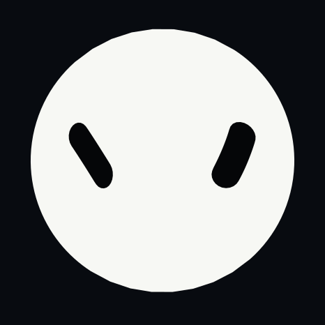
implemented eye group 5 · source eye group 7 · expression 5
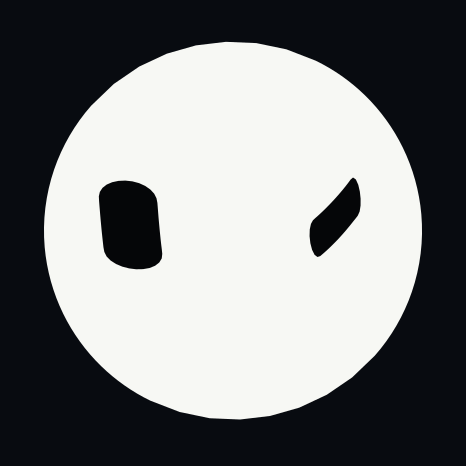
implemented eye group 6 · source eye group 23 · expression 6
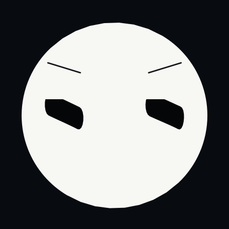
implemented eye group 7 · source eye group 4 · expression 7
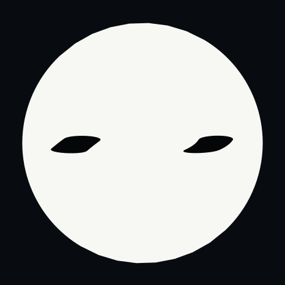
implemented eye group 3 · source eye group 2 · expression 8
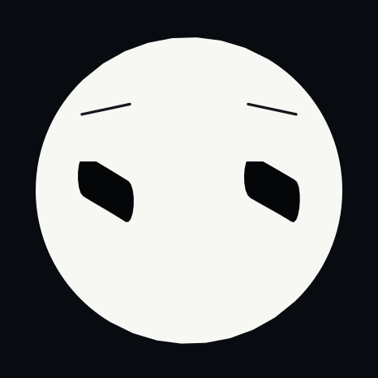
implemented eye group 7 · source eye group 4 · expression 9
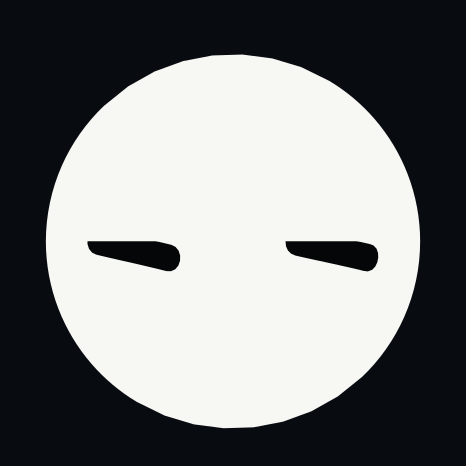
implemented eye group 7 · source eye group 4 · expression 10
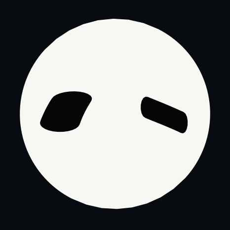
implemented eye group 2 · source eye group 14 · expression 11
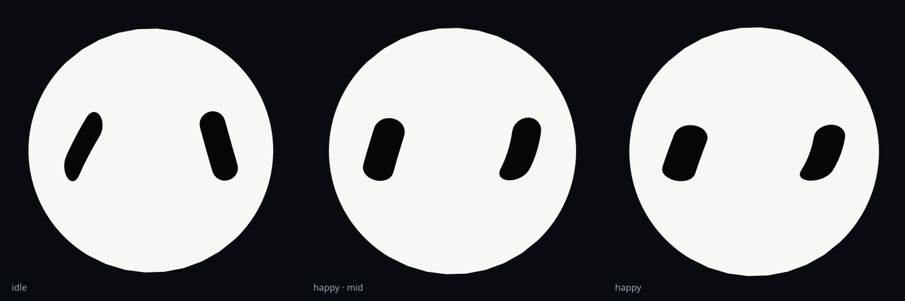
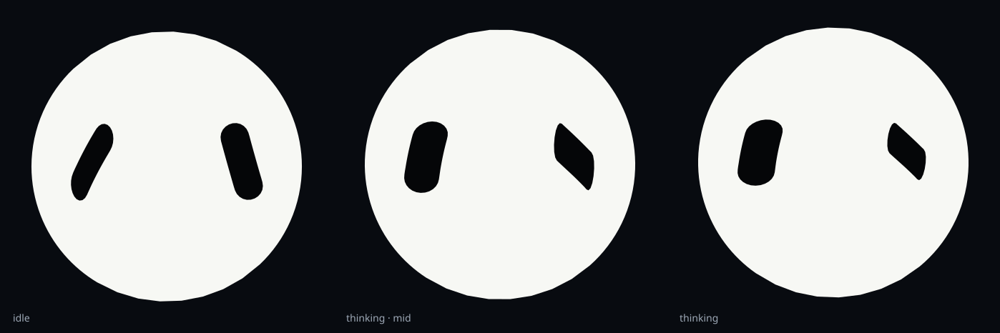
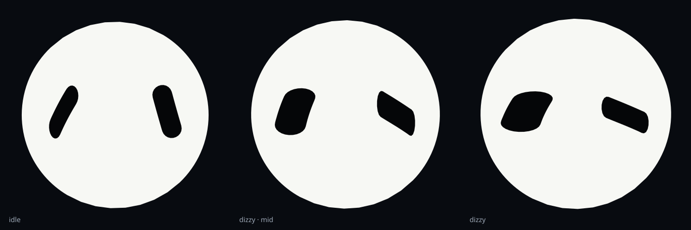